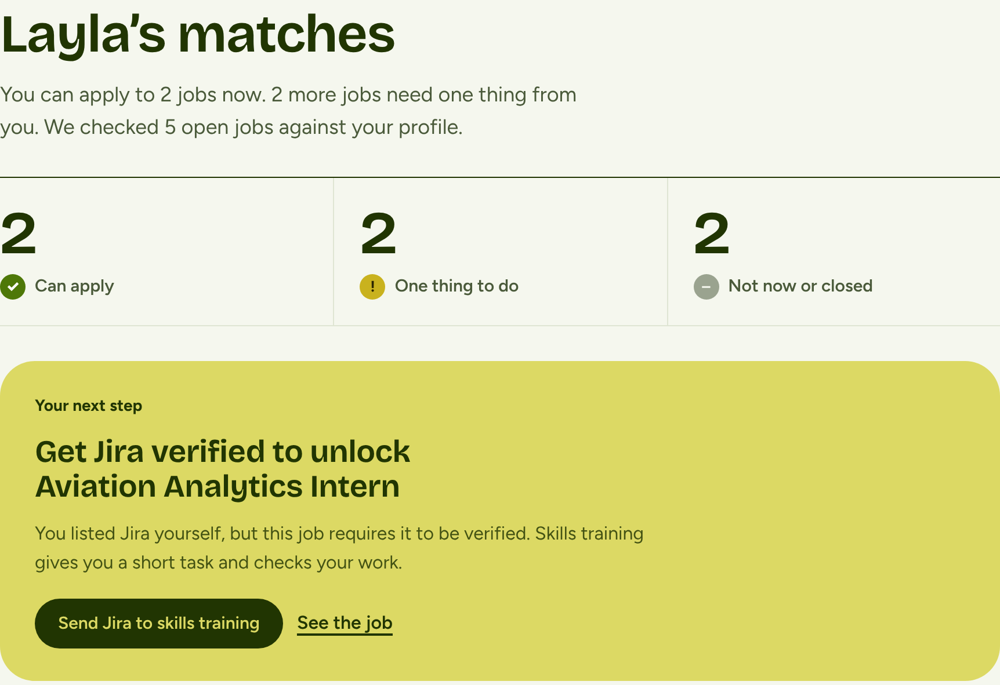
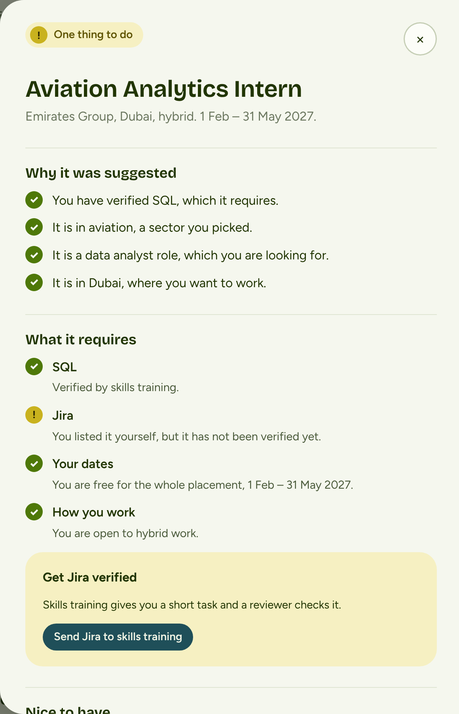
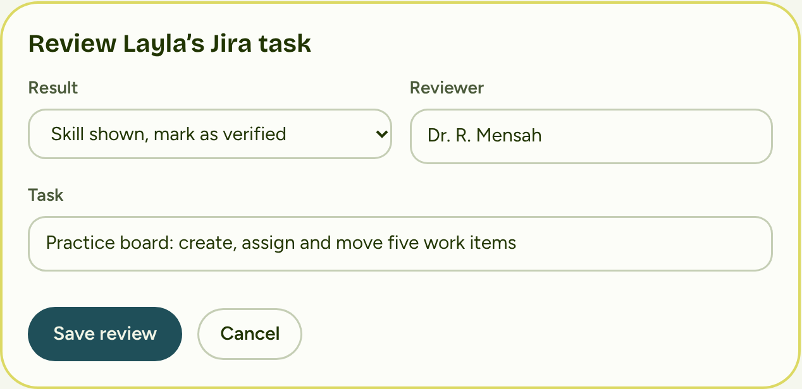
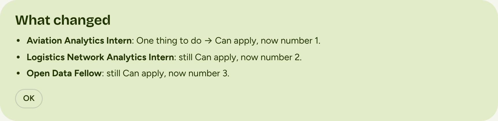
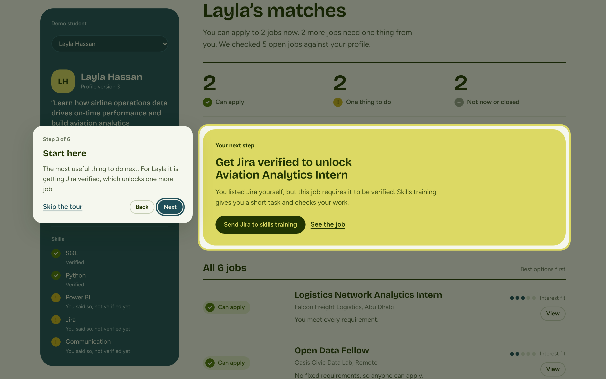
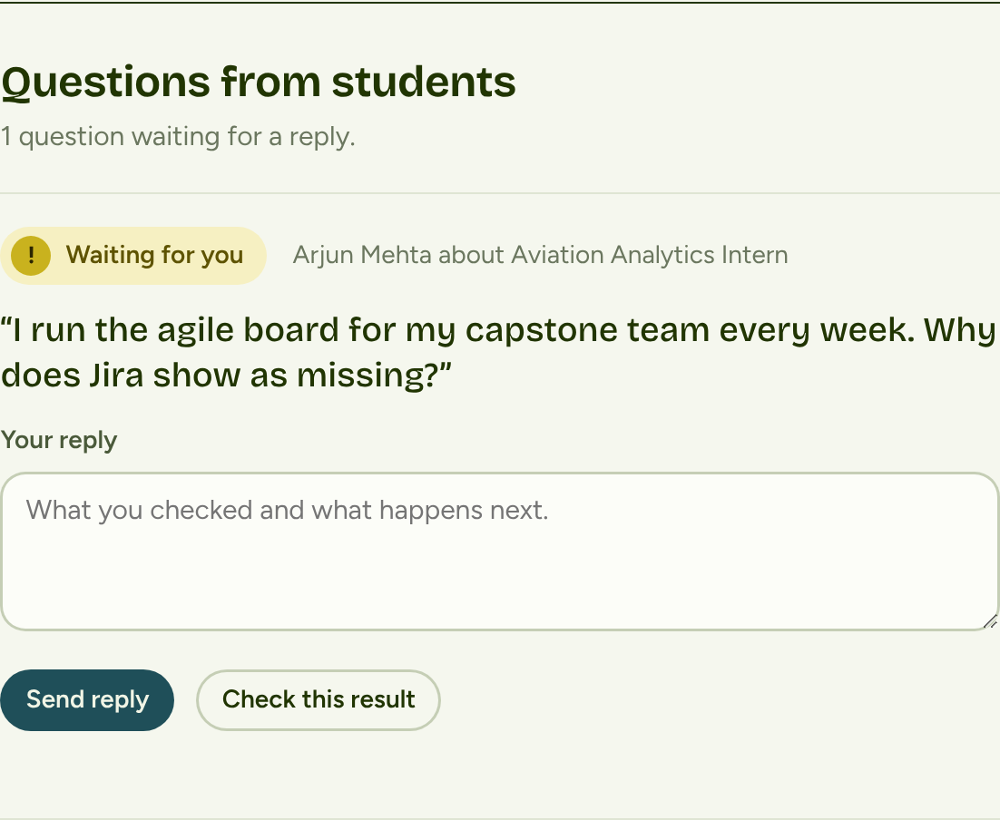
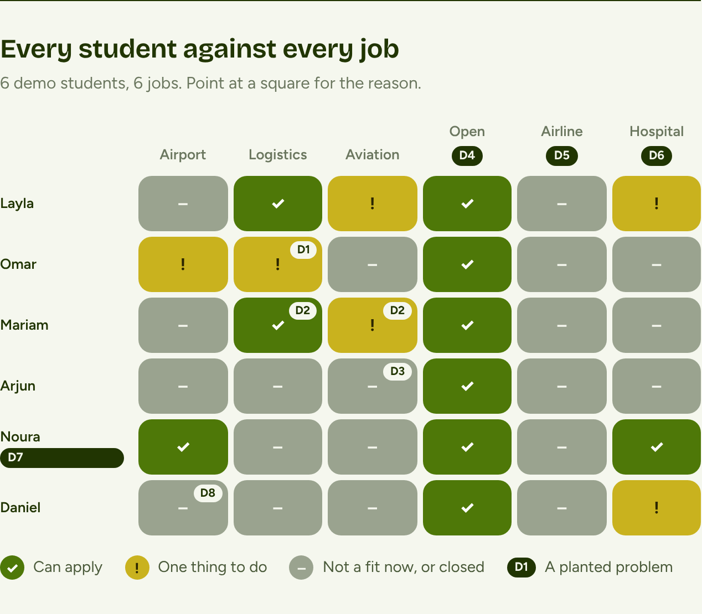

BUS2010 co-op platform, Sprint 1 review
Opportunity Matcher
Which internships fit a student, and what to do about the rest.
Team 5, project P05
Alghala Almansoori, Maha Abdulla, Che Liu, Leonard Jiang Mingming, Yonghan Yang
November 2026
Can apply
!
One thing to do
–
Not a fit now
Every result is one of these three answers, always with an icon and a word.
1. cover Hi, we are Team 5. Our part of the co-op platform is P05, opportunity matching: for each student, which internships fit, and what to do about the ones that don’t yet. In the next few minutes: the problem, a short demo of the prototype, how we test it, and how our team works together. The three answers on the right are the core idea of the product; you will see them throughout.
The problem
Students can find internships. They can’t tell which ones they qualify for.
Can I apply?
Every requirement is marked: you have it, it needs checking, or it is missing.
Why was this suggested?
Each result gives its reasons in plain words, and records what they were based on.
What would change the answer?
A missing skill becomes one next step: get it verified by skills training.
We rank jobs for students. We never rank students for employers.
Team 5, P05 Opportunity Matcher
2
2. problem Our persona is Layla Hassan, a student who wants an aviation analytics internship in Dubai. Finding jobs is already another team’s module: Layla can browse listings. What she cannot do is answer three questions about a given job. Three of the four acceptance criteria in our brief are about explaining results honestly, not about ranking accuracy, so we treat the explanation as the product. One scope rule we fixed early: we rank jobs for students, never students for employers.
Where P05 sits
Seven steps to a placement. We build step 4.
1
Build your profile
P01
2
Employers post jobs
P02
3
The university approves jobs
P03
4
See which jobs fit you
P05, our team
5
Close a skill gap
P06
6
Apply and track
P04
7
Do the placement
P07
Our one two-way hand-off
We send a skill gap to P06
P06 verifies the skill
P01 saves a new profile
We refresh the match
Team 5, P05 Opportunity Matcher
3
3. platform Seven student teams each build one step of the co-op platform. A student builds a profile, employers post jobs, the university approves them, then our step: which of those jobs fit this student. After us come skills training, applications and the placement itself. We read profiles from P01 and approved jobs from P03. Our one two-way hand-off is with P06: when a skill is missing, we send it to skills training; when they verify it, P01 saves a new profile version and we refresh the match. We never store our own opinion of whether a skill is verified; that belongs to P06.
Key design decision
Three answers, never just yes or no
Can apply
Every requirement is met, with verified evidence.
Example: SQL, verified by skills training
!
One thing to do
Something can’t be confirmed yet, like a skill nobody has verified.
Example: Jira, listed by Layla but not verified
–
Not a fit now
A requirement is clearly missing.
Example: an on-site job, a student who wants remote only
A skill a student only listed themselves counts as nice to have, never as required.
From the P01 and P05 briefs. A yes-or-no system would tell Layla “no”, and she would not apply.
Team 5, P05 Opportunity Matcher
4
4. states This is the decision everything else builds on. Each requirement has three possible answers, not two. Can apply needs verified evidence. Not a fit now is a real conflict, like a remote-only student and an on-site job. One thing to do means we simply don’t know yet: the data is missing or the skill was never checked. A system that treats “unknown” as “no” tells Layla she does not qualify when the truth is that nobody has checked. Our brief warns against exactly that kind of false confidence, so “one thing to do” is its own answer and the interface never hides it.
Sprint 1
From documents to a working prototype
Sprint goal
“Layla can see why a job was suggested, and what is missing.”
6 × 6
demo students checked against demo jobs
8
data problems planted on purpose, each with a test
16/16
automatic checks pass
100%
of reasons traceable to what they used
Team 5, P05 Opportunity Matcher
5
5. sprint1 Honestly, Sprint 0 was heavy on documents: the charter, stakeholder work and our individual research reports. This sprint we turned that research into a working prototype. The sprint goal came straight from our roadmap: Layla can see why a job was suggested and what is missing. We tested it on six demo students and six demo jobs, with eight data problems planted on purpose, and all sixteen automatic checks pass. Let me show it.
Demo 1: what Layla sees
A plain summary, then one next step

Summary first
How many jobs she can apply to now, and how many need one thing from her.
Three colours, each with a word
Green can apply, yellow one thing to do, gray not now. No codes to learn.
One next step
The lime card names the most useful action: get Jira verified.
Team 5, P05 Opportunity Matcher
6
6. demo-card Live demo, My matches, Layla. The first thing she reads is a summary: she can apply to two jobs now, and two more need one thing from her. Every result is one of the three answers. Then one lime card with her single most useful next step: get Jira verified, which unlocks the Emirates aviation analytics job. Below it is one line per job; opening a job shows why it was suggested and exactly what it requires. If the live demo fails, this screenshot shows the same state. First-time visitors also get a short guided tour and a glossary.
Demo 2: the skills-training loop
One verified skill changes the answer
1 Layla sends Jira to training

From the job details, one button sends the missing skill to skills training.
2 Skills training checks her work

A reviewer marks Jira verified. This partner team is simulated in Sprint 1.
3 Her matches refresh

Aviation Analytics Intern moves to Can apply, now number 1. The old result is kept.
Team 5, P05 Opportunity Matcher
7
7. demo-loop This is the loop we will test together with the skills-training team, P06. One: from the job details, Layla sends Jira to skills training. Two: under Partner teams, a simulated reviewer checks her practice task and marks Jira verified; the profile team then saves a new version of her profile. Three: back on My matches she sees “Good news: Jira is now verified” and refreshes. The Emirates job moves from “One thing to do” to “Can apply”, now her number one. Results are never overwritten: the old one is kept, so we can always show what Layla saw and why.
Demo 3: help for newcomers and for staff
A guided tour, and a coordinator view

First-time visitors get a 6-step tour and a glossary. A “How it works” page explains the whole co-op journey.

Students can ask about a result. The coordinator sees exactly what it used and can leave a correction note.
Team 5, P05 Opportunity Matcher
8
8. demo-coord Two kinds of help. Many students have never looked for a co-op placement, so the first visit opens a short welcome page that explains the seven-step journey, followed by a six-step tour of the screen; a glossary is always one click away. The second persona is Sara, the co-op coordinator. Arjun, another demo student, asked why Jira shows as missing when he runs an agile board every week. Sara can see exactly which inputs the result used, and nothing else from his profile. The cause: he typed a free-text phrase the system does not recognise as Jira. She leaves a correction note for the profile team; our module never edits another team’s records.
Evidence
16 of 16 automatic checks pass

8 data problems, planted on purpose
Missing dates, unverified skills, closed and outdated jobs.
Every reason is traceable
162 of 162 reasons name what they used and which version.
Unknown is never shown as Can apply
0 mistakes in 156 requirement checks.
Old results are never overwritten
New information creates a new result; the old one is kept.
Demo data only: this shows the logic works as designed, not real hiring accuracy.
Team 5, P05 Opportunity Matcher
9
9. tests Before writing any code, we broke our own demo data in eight ways: a missing end date, a skill nobody verified, a skill typed in the student’s own words, a job with no requirements, a closed job, an outdated version of a job, a profile that changed after a result was saved, and a remote-only student facing an on-site job. Each one has a named test. The grid shows every demo student against every job. We also check that every reason is traceable and that nothing unknown is ever shown as “can apply”. To be clear about what this proves: the logic works as designed on demo data. It is not a claim about real hiring accuracy, which our brief explicitly forbids.
Being honest about scope
What works, what is simulated, what comes next
Works now
Runs in the browser and keeps its records
- Match rules and weights
- The three answers
- Reasons for every result
- Skills-training loop
- Questions and notes
- 16 automatic checks
!
Simulated
We stand in for things other teams own
- Student and job data: demo
- Skills-training review
- AI: no trained model yet
- Sign-in: switch by tab
–
Planned
Each one has a sprint attached
- Joint test with P06, Sprint 2
- Test with classmates, Sprint 2
- Coordinator-labelled set, Sprint 4
- Free-text skill mapping, Sprint 4
Team 5, P05 Opportunity Matcher
10
10. status We want to be clear about what is real. Works now means it runs and keeps its records in the browser. Simulated means we stand in for something we do not control yet: the partner teams’ student and job data, the skills-training team’s review step, the AI part, and sign-in. Planned means it has a sprint attached: the joint test with P06 and our first test with classmates in Sprint 2; the coordinator-labelled comparison set and free-text skill mapping in Sprint 4. The binder asks us to keep these three apart, and the prototype says the same thing on its Partner teams page.
How we work: roles
Five people, one owner for every piece of work
AA
Alghala
Almansoori
Scrum Master
Team lead; runs the meetings and keeps the board current.
CL
Che
Liu
Product Owner
Orders the backlog; built the match rules; leads the demo.
MA
Maha
Abdulla
Data
Demo students and jobs, the skill list, the data dictionary.
LJ
Leonard
Jiang Mingming
Interface
Screens, guided tour, coordinator view, accessibility.
YY
Yonghan
Yang
Testing
The automatic checks; our Scrum of Scrums rep this sprint.
Every task on our board has an owner, a reviewer, a due date and a clear “done” (team working agreement 1). Roles rotate between sprints.
Team 5, P05 Opportunity Matcher
11
11. roles Now how we work together. Alghala leads the team and acts as Scrum Master: she runs our meetings and keeps the board current. I act as Product Owner and built the match rules. Maha owns the demo data and the shared skill list. Leonard owns the screens, the guided tour and accessibility. Yonghan owns testing and is our Scrum of Scrums representative this sprint. From our working agreements: every task has an owner, a reviewer, a due date and a clear definition of done, and nothing counts as done until the reviewer has checked it.
How we work: communication
Where we talk, and how often
Channels
WhatsApp group
Daily check-in and quick questions
Microsoft Teams
Team calls, shared files and sprint reviews
Notion task board
Every task with its owner, reviewer and due date
Rhythm
Every day
Written check-in: done, next, stuck
Mon and Thu
30-minute team call on Teams
Every week
Scrum of Scrums with P01, P03, P06
Every sprint
Planning, review, retrospective
Ground rules from our charter, 23 Oct
Urgent messages answered within 24 h
Absence flagged 4 h ahead
Disagreement: talk, then lead, then instructor
Team 5, P05 Opportunity Matcher
12
12. comms We use three channels, each with one job. WhatsApp for the daily written check-in: what I finished, what is next, where I am stuck. Teams for our twice-weekly calls, shared files and sprint reviews. Notion is the task board, and every task there has an owner and a reviewer. Once a week our representative joins the Scrum of Scrums with the teams we depend on. The ground rules at the bottom come from the team charter we all signed on 23 October: urgent messages answered within 24 hours, absences flagged four hours ahead, and a three-step way to settle disagreements.
Scrum of Scrums
Who we depend on, and our backup plan
Partner team
What they send or receive
Today
P01 Profiles
Student profile, skills and version
Using our demo data
P03 Job listings
Approved job version and open or closed
Using our demo data
P06 Skills training
Missing skill out; verified skill back via P01
Simulated; joint test Sprint 2
P04 Applications
Optional link to an application
Not needed yet
Our 3 asks next week
1 P06: agree the fields we exchange, then test together.
2 P01: own the shared skill list; P05 and P06 add to it.
3 P01: save a new profile version when a skill is verified.
Team 5, P05 Opportunity Matcher
13
13. deps This is our side of the shared dependency board. Every input has a backup we control, so no sprint goal waits on another team: profiles and job listings come from our own demo data for now, and the skills-training team is simulated. The one handoff that has to become real is with P06, because it is the only one where our output changes their work and their output changes ours. At the next Scrum of Scrums we will bring three asks: agree the fields with P06 and schedule a joint test, settle who owns the shared skill list, and agree that P01 saves a new profile version when a skill is verified, so that our module never stores its own judgments about skills. These asks are our proposals; the other teams have not agreed to them yet.
Sprint retrospective
What we learned from Sprints 0 and 1
Worked well
- Our separate research pointed to one design
- Planting problems in the data made testing concrete
- Charter and working agreements set early
To improve
- Sprint 0 produced documents, not software
- We wrote in parallel and never joined the work up
- Some tasks had no named reviewer
What we change
Done means it runs in the prototype
Alghala
Build the thinnest end-to-end path first
Che
A named reviewer on every task
Yonghan
We check these changes at the start of the next retrospective.
Team 5, P05 Opportunity Matcher
14
14. retro Our retrospective, honestly. What worked: when we compared our individual research, we had arrived at the same design, and planting problems in the data before coding made testing concrete. What did not: Sprint 0 produced a lot of documents and no running software, because everyone wrote in parallel and nothing brought the work together. So we change three things, each with an owner: a task is only done when it runs in the prototype; we build the thinnest end-to-end path first, then features; and every task gets a named reviewer. We will check these at the next retrospective.
Next: Sprint 2
Make the P06 handoff real, and test with people who did not build it
Joint test with P06
Agree the fields, then run missing skill → verified → refresh together.
Test with classmates
Three classmates find a reason, a missing skill and “Ask about this” within 60 seconds.
Accessibility
Keyboard-only path through the main journey; contrast checked and recorded.
Labelled examples
Start 20 coordinator-labelled pairs for the Sprint 4 comparison.
Questions?
Team 5, P05 Opportunity Matcher
15. next Next sprint we make the P06 handoff real: agree the fields with the skills-training team and run the missing skill, verified, refresh loop together, which is the jointly tested handoff the course asks for. We also run our first test with three classmates who did not build it, check that the main journey works with a keyboard alone and that the contrast is good enough, and start the coordinator-labelled examples we need for the Sprint 4 comparison against the plain rules. Thank you. We are happy to take questions, or to show any part of the prototype again.